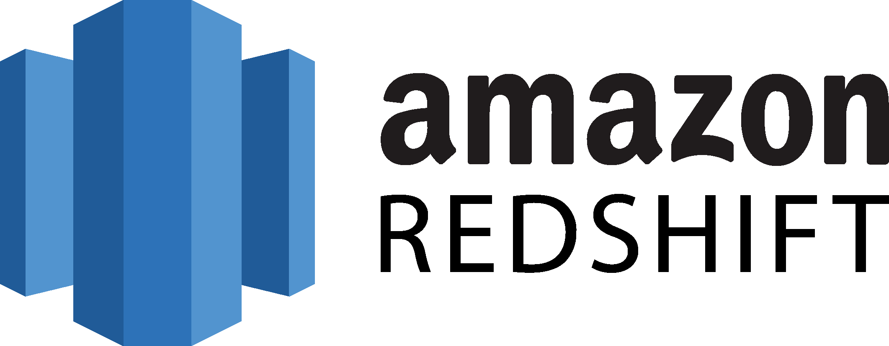

Steffie Kim, Ph.D.
Research Analyst @ Insomniac Games (Sony PlayStation Studios)
I lead quantitative and mixed-methods research to inform product and design decisions in game development. My work focuses on analyzing player behavior and engagement through large-scale telemetry, surveys, and qualitative methods, translating complex data into actionable insights for designers, engineers, and leadership. I am driven by a deep interest in how people engage with interactive media and by applying research to create player-centered experiences with meaningful impact.Key Skills
